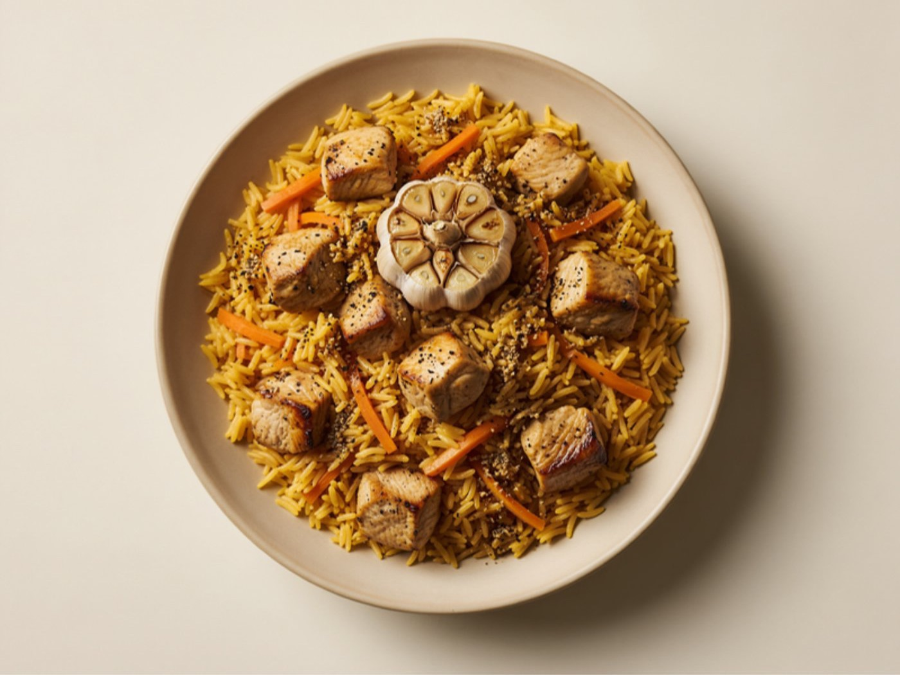

Обіди · № 031
Плов з куркою
1 год 15 хвчас
6порції
9інгредієнтів
КБЖВ · ПП-версіяна порцію
418ккал
36 гбілки
6 гжири
55 гвуглеводи
Класична версія: 640 ккал · Ж 32 г → тут на 35% менше калорій
Уся страва: 1610 г · 2510 ккал · білки 219 г · жири 38 г · вуглеводи 327 г
На 100 г: 156 ккал · білки 14 г · жири 2 г · вуглеводи 20 гПовний рецепт — за підпискою
Інгредієнти з точними грамовками й покрокове приготування страви «Плов з куркою» доступні в платному Telegram-каналі Артема Трачука. Підписка відкриває всі 100 ПП-рецептів.
- 9 інгредієнтів з точними грамовками
- 5 кроків приготування
- КБЖВ і нові рецепти щотижня
Вже підписані? Увійдіть через Telegram, і рецепт відкриється тут.
Безкоштовно: по 2 рецепти з кожного розділу — шукайте їх без позначки 🔒.